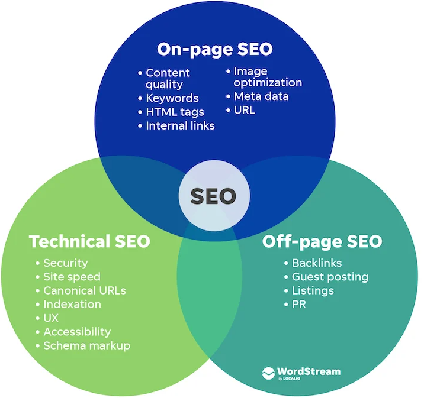

Overview
Search engine optimization, or SEO, is the process of improving a website so search engines can understand its purpose and connect it with people looking for related information. SEO also encourages developers to create websites that are clear, organized, and easy for visitors to use.
This website introduces the main parts of SEO from a web development perspective. It explains how page content, website performance, and outside reputation can work together to improve the visibility of a website.

The Main Areas of SEO
On-page SEO focuses on the information found directly on a webpage. It includes written content, headings, page titles, images, and internal links that help explain the subject of the page.
Technical SEO focuses on how the website is built and how well it functions. Website speed, mobile design, security, and site structure can affect whether users and search engines can access the content correctly.
Off-page SEO involves activity outside of the website. Backlinks, online mentions, reviews, and trusted listings can help a website build recognition and credibility over time.
These areas are connected. Strong content may not perform well when a website is slow or difficult to crawl. A technically strong website may also struggle when its content does not answer what visitors are searching for.
Key Terms
The following terms appear throughout the website and are explained in more detail on the Key Concepts page.
- Search engine optimization
- Keywords
- Crawling and indexing
- Search rankings
- On-page SEO
- Technical SEO
- Off-page SEO
- Backlinks
Table of Contents
Each page focuses on a different part of SEO. The pages can be read in order or used separately to review a specific topic.
| Page | Description |
|---|---|
| What Is SEO? | Introduces how SEO works and explains how its performance can be measured. |
| On-Page SEO | Explains how content and visible page elements help users and search engines understand a webpage. |
| Technical SEO | Covers website performance, mobile design, crawling, indexing, and other technical concerns. |
| Off-Page SEO | Explains how backlinks, outside mentions, and online reputation can affect search visibility. |
| Key Concepts | Defines important terms used throughout the website. |
| References | Lists the sources and learning resources used to research the topic. |
| About | Provides background information about the project and its purpose. |
Why SEO Is Useful
A website cannot help many people when its pages are difficult to find or understand. SEO gives developers a way to think about how content is discovered and how visitors experience the website after arriving.
Many SEO improvements also support better web design. Clear navigation helps visitors move through the site. Organized headings make content easier to read. Responsive layouts and faster pages make the website more usable across different devices.
SEO does not guarantee that a webpage will appear first in search results. Its purpose is to create a stronger website that gives search engines enough information to understand the content and gives users a useful experience.